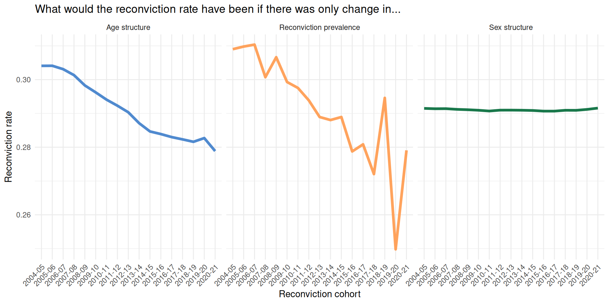

| Amalgamation paradox in reconviction rates | |||
|---|---|---|---|
| Sex |
Reconviction rate
|
Change | |
| 1995/96 | 2003/04 | ||
| Men | 0.46 | 0.47 | Increasing |
| Women | 0.31 | 0.37 | Increasing |
| Total | 0.45 | 0.45 | No change |
| Source: Kirkwood (2008) | |||
Why is Scotland’s reconviction rate falling?
Ben Matthews (University of Stirling) and Josiah King (University of Edinburgh)
2025-05-13
Overview
- The crime drop has changed the demographics of people being convicted ((Matthews and Minton 2018); (Tuttle 2024); (Farrell, Laycock, and Tilley 2015))
- And changes in the ‘offender mix’ can complicate comparisons in the reconviction rate over time
- The change in the demographics of people convicted over the course of the crime drop introduces statistical bias in the aggregate reconviction rate if it’s used as a measure of ‘effectiveness’ of the justice system
Part One: The crime drop in Scotland
Change in the number of reconvictions

Change in reconviction rate overall

Change in the demographics of conviction

A gap in the crime drop
- There has been a lot written about the causes of the crime drop
- And some previous attempts to describe changes in the demographics of crime and use these descriptions to build explanations for why there is less crime now than in the past
- There haven’t - at least as far as I’m aware - been any studies which go on to explore the consequences of these changing demographics for the justice system more broadly
- One area these changing demographics can matter are when measuring CJS ‘performance’
Part Two: Measuring ‘Performance’
People want to use reconviction rates as a performance metric
The Sentencing Council (for England and Wales) says the reconviction rate is a “key metric for evaluating the effectiveness of sentencing” (gormleyEffectivenessSentencingOptions2022:18?)
“Reduced reoffending is an important objective that can facilitate desistance and reintegration. While reducing reoffending is important, in the absence of reintegration or desistance, reductions in offending are less likely to persist. Yet, reoffending can be a more quantifiable metric which has advantages – though care must still be taken as there are different definitions of reoffending” (gormleyEffectivenessSentencingOptions2022:5?). Basically it can help measure the ‘effectiveness’ of sentencing (… if imperfectly).
“The ability to compare and discuss trends in reoffending is important to its usefulness as a performance target within government” (Browne 2024)
The logic is that if the reconviction rate goes down then the criminal justice system is doing a better job at rehabilitating offenders
“Reduce reconviction rates” was a National Performance Framework indicator until (at least) 2017 (Scottish Government 2017)
But it’s not so simple
But, as NI statistics says: “differences in the offending related characteristics of those included in each cohort make comparing reoffending rates problematic, across both time and jurisdictions.” (Browne 2024)
We can think of the overall reconviction rate as a weighted mean of the reconviction rates in different demographic groups, weighted by the group size. You can have changes in the rate due to changes in the means or changes in the rates.
This is known as the amalgamation paradox (Good and Mittal 1987) or Simpson’s (Simpson 1951) paradox
Because of changes in the distribution of characteristics of the people who have been convicted change in the overall reconviction rate can be biased. The overall change we see will be both due to changes in the prevalence of reconviction amongst demographic groups, but also the mix/composition of those groups who are in each reconviction cohort.
Rates and weights
Kirkwood
Kirkwood
| Amalgamation paradox in reconviction rates | |||||
|---|---|---|---|---|---|
| Sex |
Reconviction rate
|
Change |
Proportion of people convicted
|
||
| 1995/96 | 2003/04 | 1995/96 | 2003/04 | ||
| Men | 0.46 | 0.47 | Increasing | 0.86 | 0.84 |
| Women | 0.31 | 0.37 | Increasing | 0.14 | 0.16 |
| Total | 0.45 | 0.45 | No change | - | - |
| Source: Kirkwood (2008) | |||||
Rates and weights
“a headline reduction in reconvictions in line with targets might be due to a change in the gender balance of the incarcerated population, rather than the success of any policy or intervention. If the target for a reduction in the overall reconviction rate is met, and this is mainly due to more people with a lower likelihood of re-offending being brought into the criminal justice system and being convicted, rather than through a reduction in rates of re-offending among those who would normally be brought into the system, this would bring little cause for celebration.” (Kirkwood 2008)
Measuring performance
This is well known, and typically what people do is come up with some counterfactual ‘standardized’ reconviction rate to facilitate comparisons across years when measuring performance (francis2005?; cunliffe2007?; drank2010?) to correct for the problem of changing ‘offender mix’
However, this is usually conducted with a focus on producing some overall assessment of justice system performance, and not in exploring the relative importance of demographic changes and change in underlying reconviction rates in driving change in the aggregate rate
No studies have assessed the extent to which these long-term demographic changes as reflected in the crime drop can influence aggregate performance measures
(There are also conceptual reasons why we might not want to use reconvictions as a performance measure (e.g. Klingele (2019) advocates for measuring ‘markers of desistance’ instead of a binary reconviction measure; see Weaver (2019) and Maruna (2025) for more conceptual critiques) - but this isn’t so relevant for our concerns here)
Part Three: A solution?
The solution?
- The methods of standardization and decomposition (standard in demography) can separate out changes in the reconviction rate that are due to demographic change from those due to change in the underlying reconviction rate for different age groups
- Standardization and decomposition can also separate out the relative importance of different factors in driving aggregate change
- Previous regression-based approaches (e.g. (francis2005?; cunliffe2007?); (drank2010?)) to correct for the problem of changing ‘offender mix’ can perform this standardization part, but don’t focus on the decomposition part
- We illustrate this using the methods described by (Das Gupta 1993) and implemented in the
{dasguptr}R package (king2025?) to Scottish reconvictions data from 2004-2022
Research design
Research Question
- How much of the change in the overall reconviction rate in Scotland between 2004 and 2022 is attributable to changing demographics?
Data
We explore change in reconviction rates in Scotland between 2004-2020. These are made available by SG as part of their Reconvictions Bulletin. We decompose the overall reconviction rate by age and sex. These are key demographic characteristics in relation to the crime drop in Scotland (Matthews and Minton 2018). There is nothing particularly special about these time points, and the same approach would work for other time periods and other characteristics.
- Some evidence that Scotland might be an extreme case here with larger demographic changes than in other countries (matthews23?)
Measures
“The reconviction rate is presented as the percentage of offenders in the cohort who were reconvicted one or more times by a court within a specified follow up period from the date of the index conviction. For most reconviction analyses in this bulletin, the follow-up period is one year,” (Scottish Government 2024)
There are alternatives (e.g. the average number of convictions per person reconvicted). The same principles apply regardless of the measure used.
Age groups included: under 21, 21 to 25, 26 to 30, 31 to 40, over 40
Genders included: male, female
Method
The Kitagawa/Das Gupta approach to decomposition calculates what the reconviction rate ‘would have been’ in each year if each year had the average demographic composition
The differences between these ‘standardized’ rates to the observed rates are then used to calculate how much of the change in the observed rate is due to changes in the underlying reconviction rates for each age group, and how much is due to the change in the mix of the age groups
Results
Change in reconviciton rate by age group

Change in the relative size of age group

Table as Kirkwood
# A tibble: 5 × 3
age `2004-05` `2020-21`
<fct> <dbl> <dbl>
1 under 21 0.394 0.310
2 21 to 25 0.365 0.306
3 26 to 30 0.345 0.304
4 31 to 40 0.289 0.290
5 over 40 0.192 0.200Changing demographic mix
How much change in the reconviction rate is due to demographic mix?
| Standardization and Decomposition of reconviction rates in Scotland | ||||
|---|---|---|---|---|
| Measure |
Year
|
Difference in rates | % of crude difference | |
| 2004-05 | 2020-21 | |||
| age_struct | 0.31 | 0.28 | -0.03 | 49.06 |
| gender_struct | 0.29 | 0.29 | 0.00 | -0.22 |
| prevalence | 0.31 | 0.28 | -0.03 | 51.16 |
| crude | 0.32 | 0.27 | -0.06 | 100.00 |
| Data from Scottish Government (2023). Calculations authors' own. | ||||
Huh?
- We can attribute about 49% of the fall in the reconvictions rate in Scotland between 2004/05-2020/21 to demographic change in the population of people convicted, rather than falls in the reconviction rate per se.
- If you want to use the reconviction rate as a measure of sentencing effectiveness or similar, you would think the justice system is doing about twice as a good a job as it is
- The change in the mix of people being reconvicted could still be due to criminal justice practices (e.g. more diversion from prosecution for young people), but is not attributable to the ‘effectiveness’ of sentencing - it is purely due to changes in the demographic mix of people being convicted in the first place
Discussion
- The crime drop in Scotland has led to a profound shift in the demographics of the people coming through the criminal justice system
- This shift is so pronounced that it affects our capacity to understand the ‘effectiveness’ of punishment through aggregate measures such as the overall reconviction rate
- A perspective which focuses on the criminal justice system rather than the people involved with the system will be mislead by aggregate measures of system ‘performance’
- There are lots of other possible ways that demographic changes in crime may impact the functioning of the criminal justice system and public perceptions of crime
Coda
What do to about this?
- If we wanted to make a ‘so here’s what the Sentencing Council should do now’ recommendation there are two possible recommendations we can make
- Option one: Recommend that Sentencing Council/Scottish Government/whoever use the methods outlined here as an ‘improved’ performance measure
- Option two: Recommend that [see above] look at reconviction rates for each demographic sub-group as well as overall reconviction rates
Reconviction rates for each group
- Suggesting that policy-makers/whoever analyse trends for all groups runs counter to the logic of quantification - the whole point is to reduce the amount of information required to understand the thing you care about (Maybe Porter?)
- It also raises the question of which groups would make the cut, and how they would be defined
- This is famously the paradoxical bit of Simpson’s paradox - the hard part is identifying the subgroups you need to stratify by (Pearl 2014)
“Following consultation with key users”
- The technical ‘fix’ in terms of standardization and decomposition may be limited in its application as it ignores the politics of reconviction statistics
- In practice there might be limited appetite for an esoteric and tricky to understand measure amongst ‘key users’
In bulletins prior to 2017/18, reoffending figures were provided alongside adjusted reoffending rates for adults and the overall cohort, to help provide an estimate of change in reoffending. Following consultation with key users, the decision was taken to exclude this from future publications to avoid confusion in he interpretation of findings.
Thank you!
Bonus slides
Percentage change by group
| category | comp_ce | rate_ce | tot_ce |
|---|---|---|---|
| gender | |||
| Female | 2.14 | 3.82 | 5.96 |
| Male | -2.36 | 21.76 | 19.40 |
| age | |||
| 21 to 25 | 47.26 | 9.39 | 56.66 |
| 26 to 30 | -7.21 | 6.03 | -1.18 |
| 31 to 40 | -37.16 | -0.27 | -37.43 |
| over 40 | -54.01 | -1.54 | -55.55 |
| under 21 | 100.17 | 11.97 | 112.15 |
References
Browne, S. 2024. “Adult and Youth Reoffending in Northern Ireland (2021/22 Cohort).” Northern Ireland Statistics and Research Agency.
Das Gupta, Prithwis. 1993. Standardization and Decomposition of Rates: A User’s Manual. 186. US Department of Commerce, Economics and Statistics Administration, Bureau of the Census.
Farrell, Graham, Gloria Laycock, and Nick Tilley. 2015. “Debuts and Legacies: The Crime Drop and the Role of Adolescence-Limited and Persistent Offending.” Crime Science 4 (1). https://doi.org/10.1186/s40163-015-0028-3.
Good, I. J., and Y. Mittal. 1987. “The Amalgamation and Geometry of Two-by-Two Contingency Tables.” The Annals of Statistics 15 (2): 694–711. https://www.jstor.org/stable/2241334.
Kirkwood, Steve. 2008. “Evidencing the Impact of Criminal Justice Services on Re-offending.” CJScotland.
Klingele, Cecelia. 2019. “Measuring Change.” The Journal of Criminal Law and Criminology (1973-) 109 (4): 769–817.
Maruna, Shadd. 2025. “Redeeming Desistance: From Individual Journeys to a Social Movement.” Criminology n/a (n/a). https://doi.org/10.1111/1745-9125.12393.
Matthews, Ben, and Jon Minton. 2018. “Rethinking One of Criminology’s ‘Brute Facts’: The Age–Crime Curve and the Crime Drop in Scotland.” European Journal of Criminology 15 (3): 296–320. https://doi.org/10.1177/1477370817731706.
Pearl, Judea. 2014. “Comment: Understanding Simpson’s Paradox.” The American Statistician 68 (1): 8–13. https://www.jstor.org/stable/24591584.
Scottish Government. 2017. “Scotland Performs Update.”
———. 2024. “Reconviction Rates in Scotland: 2020-21 Offender Cohort.” Scottish Government.
Simpson, E. H. 1951. “The Interpretation of Interaction in Contingency Tables.” Journal of the Royal Statistical Society: Series B (Methodological) 13 (2): 238–41. https://doi.org/10.1111/j.2517-6161.1951.tb00088.x.
Tuttle, James. 2024. “The End of the Age-Crime Curve? A Historical Comparison of Male Arrest Rates in the United States, 1985–2019.” The British Journal of Criminology 64 (3): 638–55. https://doi.org/10.1093/bjc/azad049.
Weaver, Beth. 2019. “Understanding Desistance: A Critical Review of Theories of Desistance.” Psychology, Crime & Law 25 (6): 641–58. https://doi.org/10.1080/1068316X.2018.1560444.